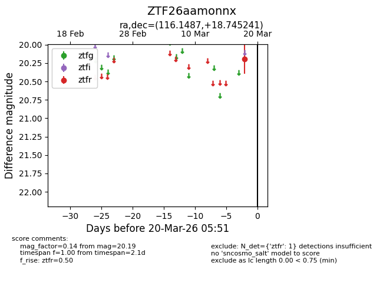
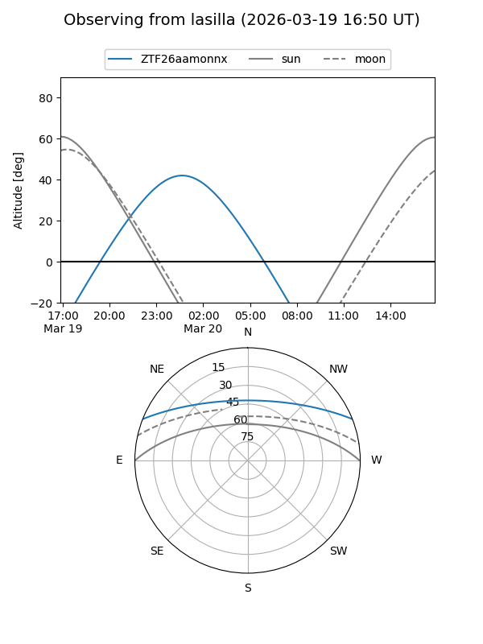
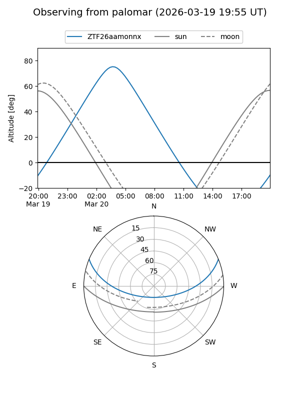

ZTF26aamonnx
Target ZTF26aamonnx at 2026-03-20 05:53
Aliases and brokers:
FINK: link
Lasair: link
ALeRCE: link
alt names
ZTF26aamonnx (ztf,fink_ztf)
Coordinates:
equatorial (ra, dec) = 116.1487,+18.74524
equatorial (HMS+DMS) = 07:44:35.68,+18:44:42.87
galactic (l, b) = (201.4767,+19.89284)
Flags:
Photometry:
last ztfr=20.19
1 ztfr detections
Lightcurve

Visibility


Additional plots